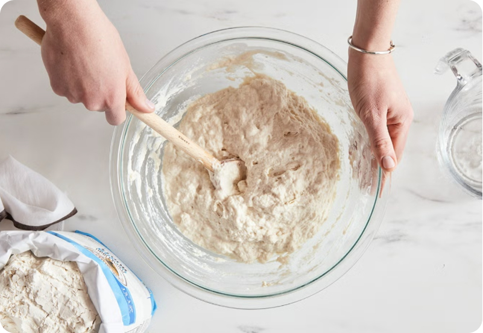
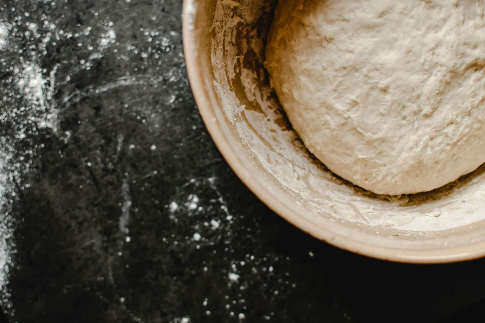
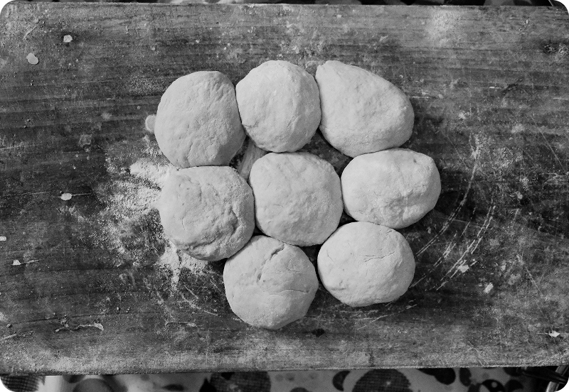
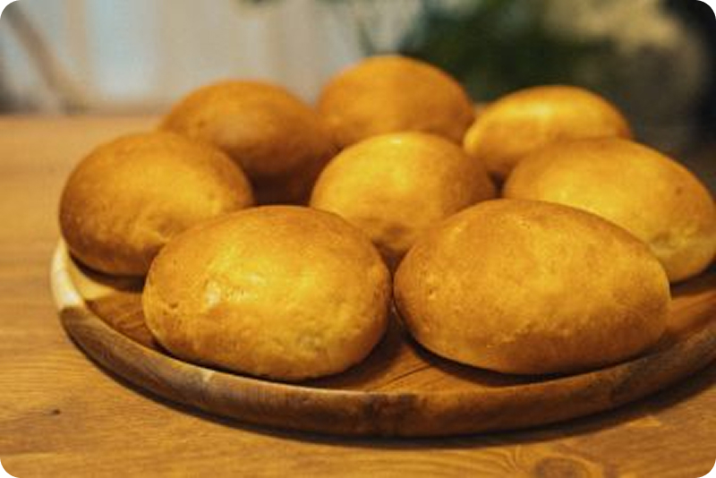

1. Lav dejen
Rør 25 g gær ud i 3½ dl vand. Tilsæt 8 g salt og derefter 500–550 g hvedemel lidt ad gangen. Ælt dejen grundigt, til den er smidig.

Følg opskriften trin for trin. Du skal bruge få ingredienser, og du kan ælte dejen i hånden.
8 store boller · Cirka 2 timer · Begynderniveau
Se ingredienser og udstyr →Rør 25 g gær ud i 3½ dl vand. Tilsæt 8 g salt og derefter 500–550 g hvedemel lidt ad gangen. Ælt dejen grundigt, til den er smidig.

Dæk skålen med et fugtigt, rent viskestykke. Lad dejen hæve i 30–45 minutter.

Del dejen i 8 stykker, og form dem til boller med let melede hænder. Læg dem på en bageplade med bagepapir. Tænd ovnen på 250 °C almindelig ovn, og lad bollerne efterhæve, mens den varmer op.

Pensl eventuelt bollerne med sammenpisket æg. Sæt dem i ovnen, og skru straks ned til 225 °C. Bag dem i 17–20 minutter, til de er gyldne. Tag bagepladen ud med grydelapper, og lad bollerne køle af.

Når du har bagt bollerne én gang, kan du prøve igen og tilsætte kerner eller frø. Du behøver ikke kunne det hele fra starten.